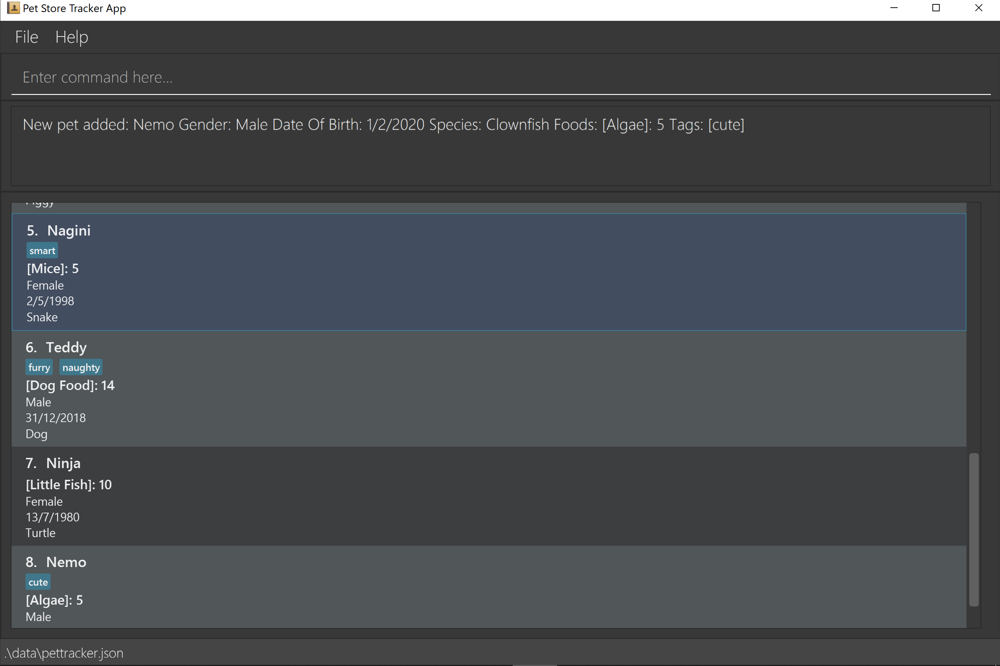

By: AY1920S2-CS2103-W15-4 Since: Feb 2020 Licence: MIT
1. Introduction
Pet Store Helper (PSH) is for owners of pet stores who prefer to use a desktop app for managing their store. More importantly, PSH is optimized for those who prefer to work with a Command Line Interface (CLI) while still having the benefits of a Graphical User Interface (GUI). If you can type fast, PSH can help you get your work done faster than traditional GUI apps.
It is based on 2 main systems, one that manages pets, and another one that organises showering schedules.
Interested? Jump to the Section 2, “Quick Start” to get started. Enjoy!
2. Quick Start
-
Ensure you have Java
11or above installed in your Computer. -
Download the latest
petStoreHelper.jarhere. -
Copy the file to the folder you want to use as the home folder for your Pet Shop Helper.
-
Double-click the file to start the app. The GUI should appear in a few seconds.
 -
Type the command in the command box and press Enter to execute it.
e.g. typinghelpand pressing Enter will open the help window. -
Some example commands you can try:
-
display p: displays the list of all pets. -
addpet: addpet n/Teddy g/male b/01/01/2019 s/dog f/brand A:15 f/brand B:20 t/small t/lazy -
deletepet 3: deletes the 3rd pet shown in the current pet list -
display s: displays teh schedule system -
addslot n/Teddy t/16/11/2020 1300 d/90: creates a showering schedule for Teddy at the given input time and duration. -
exit: exits the app
-
-
Refer to Section 3, “Features” for details of each command.
3. Features
Command Format
-
Words in
UPPER_CASEare the parameters to be supplied by the user e.g. inadd n/NAME,NAMEis a parameter which can be used asadd n/John Doe. -
Items in square brackets are optional e.g
n/NAME [t/TAG]can be used asn/Some Pet t/lazyor asn/Some Pet. -
Items with
… after them can be used multiple times including zero times e.g.[t/TAG]…can be used ast/cute,t/small t/whiteetc. -
Parameters can be in any order e.g. if the command specifies
n/NAME g/GENDER,G/GENDER n/NAMEis also acceptable.
3.1. Command / general features
3.1.1. Viewing help: help
Format: help
3.1.3. Changing the system to display: display SYSTEM
Changes the display board to show the specified system.
Format: display SYSTEM
Examples:
-
display p
Displays all pets in the pet tracker system. -
display s
Displays all slots in the schedule system. -
display i
Displays a list of all pet food (inventory) and the needed amount per week. You can double click on the food items to view the breakdown.
3.1.4. Saving the data
All data is saved to the hard disk automatically after any command that changes the data.
There is no need to save manually.
3.1.5. Statistics: stats
Provides statistics about the pet tracker, schedule system, and inventory.
-
There is a pie chart representing the ratio of different pet species.
-
A timetable that shows an overall schedule for recent 3 days.
-
A bar chart that shows the weekly consumption of different pet food.
3.2. Pet Tracker System
3.2.1. Adding a pet: addpet
Adds a pet to the pet tracker system.
Format: addpet n/NAME g/GENDER b/DATE OF BIRTH s/SPECIES f/FOOD : AMOUNT [t/TAG]…
Example:
-
addpet n/Garfield g/male b/01/01/2019 f/Brand A: 30 t/lazy t/lasagna
3.2.2. Finding pets by names or tags: findpets
Finds pets whose name contains any of the given keywords. The application will automatically change to the pet display system.
Format: findpets PETNAME [MORE PETNAMES]…
Example:
-
findpets garfield odie
Returns a list of pets, whose names either containgarfieldorodieor both.
3.2.3. Editing a pet: editpet
Edits any field of an existing pet in the system.
Format: editpet i/INDEX [n/NAME] [g/GENDER] [t/TAG]…
Example:
-
display p
editpet 2 n/Coco b/02/01/2020 t/cuddly t/grey
Overwrites information of the 2nd pet in the system with name "Coco", date of birth "2 Jan 2020, and 2 tags of “cuddly”, “grey”. -
findpets garfield
editpet 2 n/Coco
Overwrites the name of the 2nd pet in the results offindpets garfieldto "Coco" -
display s
editpet 1 n/garfieldOverwrites name of the 1st pet in the whole pet list to be "Garfield".
3.2.4. Deleting a pet: deletepet
Deletes the specified pet from the system.
Format: deletepet i/INDEX
Examples:
-
display p
deletepet 2
Deletes the 2nd pet in the system. -
findpets n/garfield
deletepet 2
Deletes the 2nd pet in the results of thefindpets garfieldcommand. -
display i
deletepet 2Deletes 2nd pet in the whole pet list.
3.3. Schedule System
3.3.1. Adding a slot: addslot
Adds a new occupied slot to the schedule.
Format: addslot n/PETNAME t/DATETIME d/DURATION
Examples:
-
addslot n/Coco t/16/11/2020 1300 d/90 -
addslot n/Brian Griffin t/9/2/2020 0307 d/5
3.3.2. Finding slots: findslots
Finds slots occupied by a pet matching the specified name, or slots occupied on the given date, or both. The application will automatically change to the schedule system to display matched results.
Format: findslots [n/PETNAME [MORE PETNAMES]…] [t/DATE [MORE DATES]…]
Example:
-
findslots n/Brian Griffin
Displays the slots occupied byBrian Griffin. Note that slots occupied byGriffinorbrian griffinwill not be returned. -
findslots t/20/2/2020 1/3/2021
Displays the occupied slots on20/2/2020and1/3/2021. -
findslots n/Coco t/16/11/2020
Displays the slots occupied byCocoon16/11/2020.
3.3.3. Edting a slot: editslot
Edits an existing occupied slot in the schedule.
Format: editslot i/INDEX [n/PETNAME] [t/DATETIME] [d/DURATION]
Examples:
-
display s
editslot 1 t/16/11/2020 1300 d/120
Edits the datetime and duration of the 1st slot to be16/11/2020 1300, and120minutes respectively. -
findslots t/1/1/2020
editslot 3 d/45
Edits the duration of the 3rd slot in the search result to be45minutes. -
display p
editslot 12 n/Brian Griffin
Edits the pet occupying the 12th slot to beBrian Griffin.
3.3.4. Deleting a slot: deleteslot
Deletes the specified slot from the schedule.
Format: deleteslot i/INDEX
Examples:
-
display s
deleteslot 2
Deletes the 2nd slot in the schedule. -
findslots n/Coco
deleteslot 2
Deletes the 2nd slot occupied byCoco. -
display i
deleteslot 2
Deletes the 2nd slot in the schedule.
3.3.5. Showing all conflicts: conflicts
Displays the slots that have a conflict, i.e., an overlap in time with another occupied slot.
Format: conflicts
4. Command Summary
-
Common / general features
-
Help:
help -
Exit:
exit -
Display:
display SYSTEM
e.g.display p
e.g.display s
e.g.display i -
Statistics:
stats+
-
-
Pet Tracker System
-
Add pet:
addpet n/NAME g/GENDER b/DATE OF BIRTH s/SPECIES f/FOOD NAME: AMOUNT [f/FOOD NAME: AMOUNT] [t/TAG]…
e.g.addpet n/Garfield g/male b/01/01/2019 s/cat tabby t/lazy f/Brand A: 30 t/good for nothing t/lasagna -
Find pet:
findpets [n/NAME]… [t/TAG]…
e.g.findpets n/garfield n/odie t/jon -
Edit pet:
editpet i/INDEX [n/name] [b/DATE OF BIRTH] [t/TAG]…
e.g.editpet 2 n/garfield t/cuddly -
Delete pet:
deletepet i/INDEX
e.g.deletepet 2
-
-
Schedule System
-
Add slot:
addslot n/PETNAME t/DATETIME d/DURATION
e.g.addslot n/Coco t/16/11/2020 1300 d/90
e.g.addslot n/Brian Griffin t/9/2/2020 0307 d/5 -
Find slot:
findslots [n/PETNAME] [t/DATE]
e.g.findslots n/Brian Griffin
e.g.findslots t/20/2/2020
e.g.findslots n/Coco t/16/11/2020 -
Edit slot:
editslot i/INDEX [n/PETNAME] [t/DATETIME] [d/DURATION]
e.g.editslot 1 t/16/11/2020 1300 d/120
e.g.editslot 3 d/45
e.g.editslot 12 n/Brian Griffin -
Delete slot:
deleteslot i/INDEX
e.g.deleteslot 2 -
Show conflicts:
conflicts
-
5. FAQ
Q: How do I transfer my data to another Computer?
A: Install the app in the other computer and overwrite the empty data file it creates with the file that contains the data of your previous Pet Shop Helper folder.